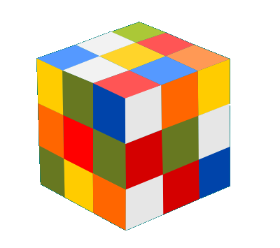
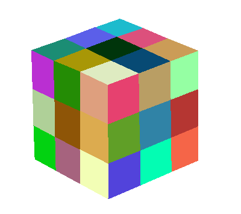
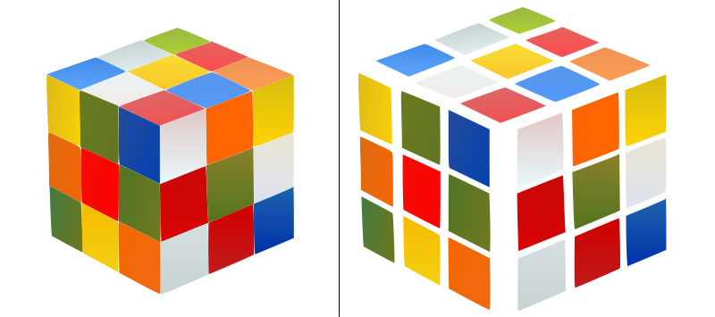
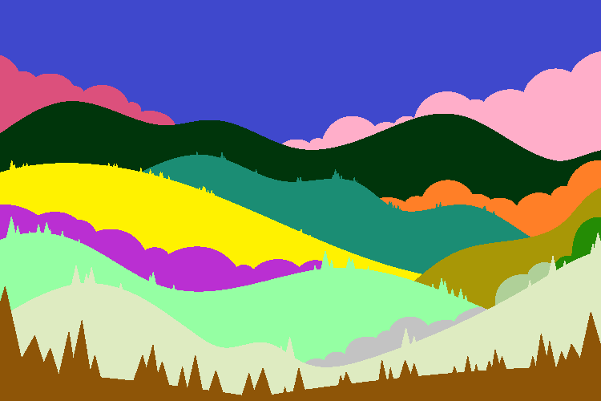
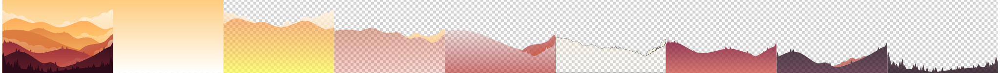
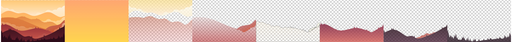

Results of specifying opaque layers
To improve the flexibility of our method, we allow users to specify some regions as opaque layers, especially for those X-junctions that do not meet the transparency assumption.
-
Cube
In this case, although there are many x-junctions in the cube image, they do not satisfy the transparency assumption, i.e., the x-junction is not produced by one semi-transparent layer lying over the other two layers. Use could specify all regions as opaque layers to avoid unreasonable vectorization. Input image and region segementation.
Reconstructed vector graphic followed by vectorized layers from bottom to top
-
Mountain
In this case, we specify the blue region at the top of the segmentation as opaque, resulting in the vector decomposition shown in row 2, and specify the yellow region as opaque, resulting in the vector decomposition shown in row 3.Input image and region segementation. Image designed by pikisuperstar on Freepik.
Reconstructed vector graphic followed by vectorized layers from bottom to top
Reconstructed vector graphic followed by vectorized layers from bottom to top